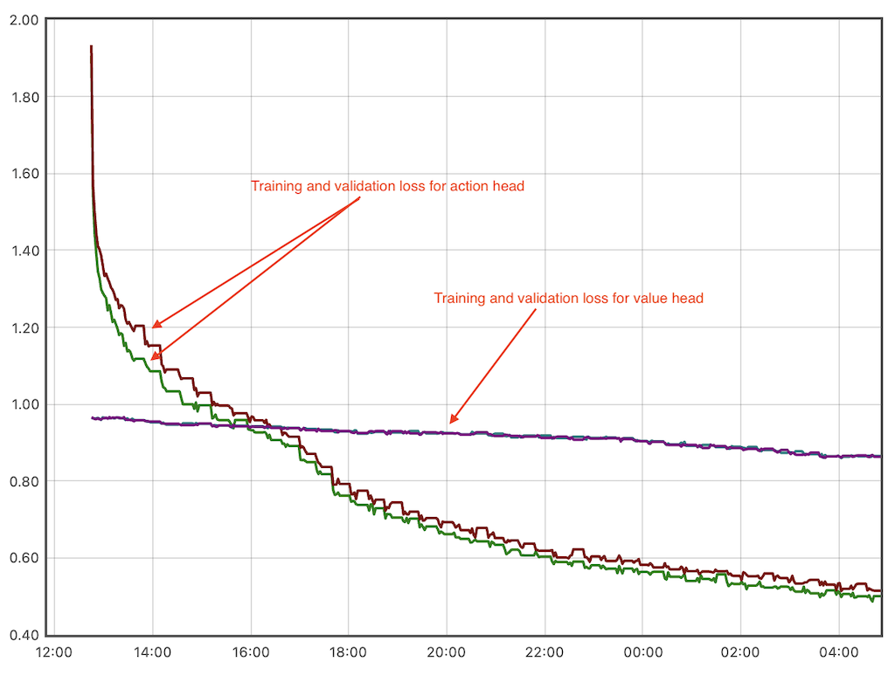

Here we look at self-play loop played for game Othello on 6x6 board. Similar to what Alpha Go Zero did years ago, it is continously playing against itself to collect training data, uses that data to train new model and evaluates the model.
Model takes current board as an input and produces two outputs: probabilities for the next move and a single number representing expected score for the game if played from current position.
Model definition is here. Residual tower is a shared part of the mode, with separate action and value parts attached to it.
In current setup, we ignore value prediction entirely and not take value loss in training process at all - we only optimize for action. Here we set the weight for the loss during training to be 0.
